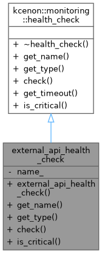

Inheritance diagram for external_api_health_check:

Collaboration diagram for external_api_health_check:

Public Member Functions | |
| external_api_health_check (const std::string &name) | |
| std::string | get_name () const override |
| health_check_type | get_type () const override |
| health_check_result | check () override |
| bool | is_critical () const override |
 Public Member Functions inherited from kcenon::monitoring::health_check Public Member Functions inherited from kcenon::monitoring::health_check | |
| virtual | ~health_check ()=default |
| virtual std::chrono::milliseconds | get_timeout () const |
Private Attributes | |
| std::string | name_ |
Detailed Description
Definition at line 95 of file production_monitoring_example.cpp.
Constructor & Destructor Documentation
◆ external_api_health_check()
|
inlineexplicit |
Definition at line 100 of file production_monitoring_example.cpp.
100: name_(name) {}
Member Function Documentation
◆ check()
|
inlineoverridevirtual |
Implements kcenon::monitoring::health_check.
Definition at line 110 of file production_monitoring_example.cpp.
110 {
111 // Simulate external API health check
113 }
static health_check_result healthy(const std::string &msg="OK")
Definition monitoring_core.h:149
Here is the call graph for this function:

◆ get_name()
|
inlineoverridevirtual |
Implements kcenon::monitoring::health_check.
Definition at line 102 of file production_monitoring_example.cpp.
◆ get_type()
|
inlineoverridevirtual |
Implements kcenon::monitoring::health_check.
Definition at line 106 of file production_monitoring_example.cpp.
106 {
107 return health_check_type::readiness;
108 }
◆ is_critical()
|
inlineoverridevirtual |
Reimplemented from kcenon::monitoring::health_check.
Definition at line 115 of file production_monitoring_example.cpp.
115 {
116 return false;
117 }
Member Data Documentation
◆ name_
|
private |
Definition at line 97 of file production_monitoring_example.cpp.
The documentation for this class was generated from the following file:
- examples/production_monitoring_example.cpp